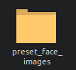

顔画像の登録
この記事では、顔画像の登録方法について説明します。

用意する顔画像の「ファイル名の決まり」は超重要です！！
必ず確認をしてください⭐️''
登録する顔画像ファイル名のきまり
ファイル形式は
PNGにしてください同じ人物の顔画像を複数登録できます。その場合、少なくとも1つのファイルは
<人物名>_default.pngとしてください。その他の顔画像ファイルは<人物名>_1.png,<人物名>_2.pngとしてください。例：

ウィンドウに顔画像を描画する際、
default画像が使用されます。逆にdefault画像が存在しない場合、エラーが発生します。
顔画像に関する基本的な知識
パスポート写真と同様に、登録する顔画像が正確であることが重要です。
引用元: Russia Visa Center
FACE01で使用する際は、高さ224px、幅224pxにしてください。
写真から顔の部分だけを切り取る場合、FACE01のUtilsクラスにあるalign_and_resize_maintain_aspect_ratioメソッドを使用すると非常に簡単です。
python example/aligned_crop_face.py docs/img/Elon_Musk_Colorado_2022.jpg
元の画像

出力された顔画像

{kind=link}
ディレクトリ名を引数として指定すると、そのディレクトリ内のすべての画像ファイルが対象となります。
preset_imagesフォルダに顔画像を配置します。

アプリケーションを起動すると、顔画像が自動的にndarrayデータに変換されます。
このとき、使用する学習モデルについて意識してください。
preset_face_imagesディレクトリ内の顔画像ファイルは顔学習モデルによってnpKnown.npzファイルへ保存されます。
FACE01ではdlibとJAPANESE FACE V1の2種類の顔学習モデルを、config.ini設定ファイルで選択できます。
dlibモデルでは顔特徴量を128次元配列データとして出力するのに対し、JAPANESE FACE V1モデルでは512次元配列データとして出力します。
最終的に出力されるファイル名はnpKnown.npzですが、使用する学習モデルによって中身が違います。
ですので、dlib学習モデルを使って作成されたnpKnown.npzファイルでJAPANESE FACE V1を顔認証に使おうとするとエラーが出ますし、その逆も然りです。
このときFACE01は一度エラーを出力して停止しますが、もう一度起動するとconfig.iniに設定されたそれぞれの学習モデルで顔画像ファイルから特徴量データを自動的に作り直します。

config.ini設定ファイルで、どちらの顔学習モデルを使用したいのか、きちんと設定することが大切です！⭐️''
`preset_images`フォルダ内の他の顔画像ファイルを一時的に削除したい場合は、アプリケーションを起動する前にそれらを`debug`フォルダに移動してください。⭐️''
このときのフォルダ名は自由ですので分かりやすい名前に変更出来ます。


これで完了です！ とても簡単ですね！